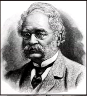

Elbert R. Robinson

Elbert R. Robinson foi um engenheiro e inventor afro-americano que fez contribuições significativas para o setor de transportes. Ele desenvolveu um sistema aprimorado para bondes elétricos, tornando-os mais seguros e eficientes. Sua inovação ajudou a otimizar o transporte público, beneficiando milhões de passageiros e melhorando a infraestrutura urbana.
Principais Contribuições
- Desenvolveu melhorias para o sistema de bondes elétricos.
- Seu design tornou os bondes mais seguros e eficientes.
- Seu trabalho ajudou a modernizar o transporte público.
- Suas inovações influenciaram a engenharia de transportes.
Saiba mais
Voltar